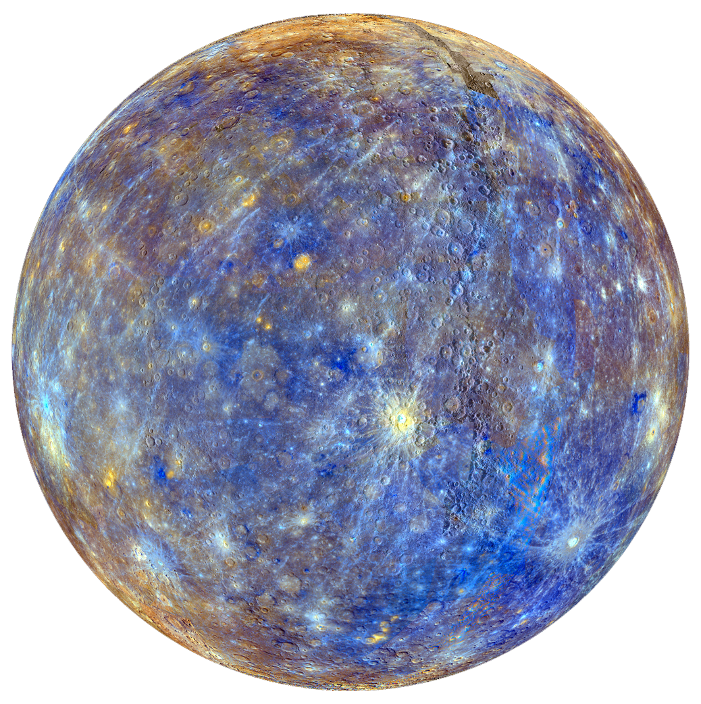

MERCURIO
Mercurio es el planeta del sistema solar más cercano al Sol y el más pequeño. Forma parte de los denominados planetas interiores y carece de satélites naturales al igual que Venus.
Se conocía muy poco sobre su superficie hasta que fue enviada la sonda planetaria Mariner 10 y se hicieron observaciones con radar y radiotelescopios. Posteriormente fue estudiado por la sonda MESSENGER de la NASA y actualmente la astronave de la Agencia Europea del Espacio (ESA) denominada BepiColombo, lanzada en octubre de 2018, se halla en vuelo rumbo a Mercurio a donde llegará en 2025 y se espera que aporte nuevos conocimientos sobre el origen y composición del planeta, así como de su geología y campo magnético.
Antiguamente se pensaba que Mercurio siempre presentaba la misma cara al Sol (rotación capturada), situación similar al caso de la Luna con la Tierra; es decir, que su periodo de rotación era igual a su periodo de traslación, ambos de 88 días. Sin embargo, en 1965 se mandaron impulsos de radar hacia Mercurio, con lo cual quedó definitivamente demostrado que su periodo de rotación era de 58,7 días, lo cual es ⅔ de su periodo de traslación. Esto no es coincidencia, y es una situación denominada resonancia orbital.
Al ser un planeta cuya órbita es inferior a la de la Tierra, lo observamos pasar periódicamente delante del Sol, fenómeno que se denomina tránsito astronómico. Observaciones de su órbita a través de muchos años demostraron que el perihelio gira 43" de arco más por siglo de lo predicho por la mecánica clásica de Newton. Esta discrepancia llevó a un astrónomo francés, Urbain Le Verrier, a pensar que existía un planeta aún más cerca del Sol, al cual llamaron Vulcano, que perturbaba la órbita de Mercurio. Ahora se sabe que Vulcano no existe; la explicación correcta del comportamiento del perihelio de Mercurio se encuentra en la teoría general de la relatividad de Einstein.